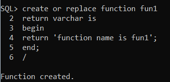

Functions
In this chapter, we will discuss the functions in PL/SQL. A function is same as a procedure except that it returns a value. Therefore, all the discussions of the previous chapter are true for functions too.
Creating a Function
A standalone function is created using the CREATE FUNCTION statement. The simplified syntax for the CREATE OR REPLACE PROCEDURE statement is as follows −
CREATE [OR REPLACE] FUNCTION function_name
[(parameter_name [IN | OUT | IN OUT] type [, ...])]
RETURN return_datatype
{IS | AS}
BEGIN
< function_body >
END [function_name];
Where,
function-name specifies the name of the function.
[OR REPLACE] option allows the modification of an existing function.
The optional parameter list contains name, mode and types of the parameters. IN represents the value that will be passed from outside and OUT represents the parameter that will be used to return a value outside of the procedure.
The function must contain a return statement.
The RETURN clause specifies the data type you are going to return from the function.
function-body contains the executable part.
The AS keyword is used instead of the IS keyword for creating a standalone function.
Example
